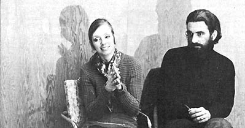

There's a special breed of people afoot in this land today and what sets them apart from all the rest is their profound respect and regard for the planet. Bright, young and talented, these folks are turning their backs on comfortable positions to take their chances with newsletters, magazines, radio and TV programs, film companies, law offices and public relation firms all designed to serve one major client: Mother Earth.
The Establishment, of course, doesn't know what to think of these people and life is not always easy for them. Still-dedicated, energetic and pragmatic-they continue on toward their idea of a meaningful life in harmony with the earth from which they spring. They're a fascinating breed and here's two for the price of one: Robert and Deborah Arnold.
Robert, as I recall, you were rapidly becoming established as a commercial and advertising photographer when you decided to devote all your energies to the environmental cause . . . and, Deborah, you were almost a regular fixture on local Cleveland TV commercials. Those fields pay well. Why did you decide to chuck two glamour careers and start a nonprofit film company for ecologists and conservationists?
It was no big thing. We just realized one day that - by producing TV commercials - we were working for the forces that threatened the future of our two (only) children, Hallie, 5, and Thea, 6. When we considered the first alternatives that came to mind - going to the woods or leaving the country - we figured that neither one offered a real solution in today's shrinking world. There isn't anyplace else anymore. No matter where you go, mankind's misuse of the planet will eventually catch up. After thinking it over we decided that the only sensible thing we could do was to commit ourselves totally to the preservation of the earth.
You didn't drop out of a secure niche in the establishment then so much as you went on to a higher level of awareness.
Perhaps. We could have called it quits and opened a ceramics shop or something but we didn't think we could do much for the environment-except in a very small way-as a potter or craftsman. We aren't cut out for politics. So we decided to devote our most valuable talents . . . the abilities we have through which the most force can be exerted . . . to this cause and we contacted a corporate lawyer and told him we wanted to establish a non-profit corporation that would produce films, educational material, slides, film strips, documentaries, TV spots and public relations material for alternatives people and environmental action groups.
What do you call your company and when did you found it?
We incorporated as The New Earth Communications Co. in May, 1970, and the firm is organized to promote environmental change beyond the stereotyped "save the woods and birds, tear down the factories" approach. We're interested in promoting conservation of ALL the earth's resources, including the human ones. Ghetto kids are as valuable a resource as wilderness . . . and one is used about as badly as the other by our present system.
Are you in the business of changing that system?
Oh, very definitely, yes. We don't believe in using violent means but the system must be changed. It's ridiculous to think of solving the planet's crisis on one hand while we expand the cause of that crisis on the other. The two goals are not compatible. We need to - we must - find alternatives to our present way of doing things if that way is destroying the earth on which we live. Although we do not share the radical "bomb the factories" sentiment, we often wonder if a backing up in time - a de-industrialization - isn't needed to get us off the runaway consumer binge we're on.
I share your feelings about the need for alternatives but I'm not sure we can go back. I generally think the solution is a redirection of the future . . . a going ahead on a footpath or quiet country road, say, instead of the superhighway.
Yes. That's a better way of putting it. We can't go back . . . we will go on and perhaps, New Earth Communications can help focus attention on some possibilities for that redirection of the future.
Drastic change is often just a matter of communications, you know. Once people are aware that there is a problem they'll become involved and do something about it. We have some friends in Washington, Pennsylvania and the women there have been leaning on the grocery stores. They ask why the stores stock all those detergents and sell products in such expensive packages. It's starting to work. They got the manager of one big supermarket interested and he began looking into the situation and then he got really involved. Now that store stocks nothing in a blister package and they've quit using brown paper sacks. They had a campaign for a couple of weeks and gave everyone a permanent cloth tote bag and now this supermarket doesn't use paper sacks anymore.
Obviously you would like to use more effective means, such as TV, to encourage like changes on a broader scale. How effective have you been to date?
Well, we've spent a rather frustrating eight months since last spring. We shot one film of the Earth Day activities at Case Western University of Cleveland. Since then we've written a lot of proposals, wasted a tremendous amount of time and spent our entire savings of $3,500 learning that much of the talk about ecology being done by the foundations and the conservation groups and the large businesses is just that . . . talk. There is some cleaning up and concrete progress being made, of course, but in far too many cases the big boys want the name without playing the game.
Like Potlatch Forests, Inc., the pulp and paper producer in Idaho that was caught dumping 40 tons of organic waste in the Clearwater River daily and spewing 4.3 million tons of sulphur gases and particulates into the air yearly while running national magazine full-page ads that congratulated itself on cleaning up the river.
Right. There are definitely some industries that don't give a damn and that do a lot of flagrant lying to cover up their lack of concern for the environment. We've come to expect this and are not surprised when we find it. One thing that did surprise us and frustrate us and wear us down, however, is the something-for-nothing attitude of so many of the people we thought were "good guys."
Can you give us an example or two?
Certainly. We've written proposals for a documentary on the alternatives back-to-the-land movement for both NET and ABC-TV. Each network liked the idea and seemed excited and kept us hanging and hanging and hanging before finally advising us that we should go ahead and shoot the film first and then - maybe - they would buy it from us.
We've written proposals, by invitation, for several manufacturers of small farm machinery that is ideal for the new subsistence back-to-the-land people. We've shown the manufacturers how a nationally circulated film that we are ready to shoot can profit them handsomely while promoting a new way of life that is good for the planet. Several companies expressed interest but, when we got ready to film, they all crawfished out.
And there's the American Film Institute. They liked our sample reel. Said it was beautiful . . . but no money. You cannot get backing from them unless you're a well-known film maker and probably don't need it anyway.
I can see how eight months of this could be discouraging.
We ran into another reaction for which we were not prepared, Unfortunately, the very people who seem to be fighting hardest for conservation sometimes kill their own chances (and ours) with an unbending inflexibility . . . an uncalled-for hard-nosed attitude. That happened to us in West Virginia.
In West Virginia there is a chance that three areas of the Monongahela State Park can be declared wilderness areas and set aside and protected for future generations. But these things do not happen by accident. Public support must be generated for such action and that costs money. The West Pennsylvania Chapter of the Sierra Club wanted to make a half-hour film for TV, in this case, but only had $2,000 for the project. They had heard that we worked on such projects for very little and they called us in.
Unfortunately, there's no way you can do a half hour of TV for that kind of money . . . even at our cut-rate prices. So we got to sniffing around and found that the people who have the money are often the industries that are doing the harm in one area or another . . . and there's such a thing as conscience money. Well, it happens that Union Carbide, which has large holdings in West Virginia, is dumping a lot of pollution into the air of Charleston. So much, in fact, that the Federal government has given the company until 1974 to either clean up its biggest plant in that area or close it down.
So we approached Union Carbide and we said, "Look. Here's your chance to do something good. The Sierra Club needs this film to spread the work so that these wilderness areas can be set aside and protected." And Union Carbide liked the idea and agreed to finance the project with no strings attached.
But you didn't make the film.
No, and it looks like those wilderness areas are lost for all time and the villain in this case-the man who killed the whole project-was a member of the local chapter of the Sierra Club.
It wasn't the Sierra Club itself?
No! Not at all. The national headquarters realized what was at stake and said, "Fine, go ahead." Rolf Larson and the West Pennsylvania Chapter of the club were also behind us all the way. But one little clique in another local chapter wouldn't bend an inch. They were so afraid that Union Carbide would get the tiniest bit of favorable publicity out of the arrangement that they refused to allow Union Carbide to finance the very tool they needed to get those wilderness areas.
That's really cutting off your nose to spite your face.
Yes, and the pathetic thing about it was that the whole vote hinged on one guy who couldn't attend the meetings anyway because he was always doing his laundry or something. He would come in right at the end of a session and hit the ceiling and accuse us of profiteering and using the Club to further our own financial interests.
Finally we hit the ceiling ourselves since we had been spending our time and our money to put that wilderness bill over. Our phone bill alone on the project was over $300.00. So we asked him if he were willing to shell $300.00 out of his pocket to put that bill across. And he never would give us an answer.
And he swung the chapter?
Well that one particular chapter of the Sierra Club is still living in the past. For years, conservation groups have had conservationists come and speak to them and they all nod and drink their tea and go home thinking they've advanced the cause. We don't have time for such deception. We're approaching an ecological crisis right now. The hour is late. We'll take any help we can get from anybody if that particular bit of help advances the ecology battle. There's a difference between selling out and accepting tools to further your own aims.
Do you have any projects underway now?
The most exciting possibility is a group in New York called ECO, Inc. that is applying for SEC clearance so it can sell stock and finance business undertakings just like any other corporation. The only difference is that this corporation is being formed expressly to fund ecologically-sound businesses. There's a lot of good eco ideas that can be the basis of a sound financial operation but, because the people involved look freaky or the original concept won't fit into some foundation's neat little slot, the project never gets off the ground. ECO, Inc. will fund such ideas and recover its investment and/or own a small, percentage of the new businesses once they're on a solid footing.
Will you be working with ECO?
We will if the SEC ever issues the clearance. It's more of the old hurry-up-and-wait frustration again. We're part of ECO's application and we're ready to start on some projects as soon as the charter is approved . . . but the SEC moves just as slowly as the networks and the foundations and the other organizations with which we've dealt. It's maddening because we can see such a crying need for what we have to contribute . . . and our hands remain tied.
Why don't you just put together a film and distribute it on your own.
Well, filmmaking is a little different from all the other crafts. If you want to start a potter's shop or a leather works you can always hustle up a hundred bucks for clay or some hides and scrounge up a few tools and, first thing you know, you've got your own shop. Clothes making, candles, whatever . . . it's all a minimal investment. If you want to make films for television or national distribution, however, you'd better have about $10,000 of good, professional equipment to start with. Then you'll need another $20,000 or $30,000 - rock bottom - to put that first feature into the can. If you haven't got a rich father when you decide to start, you'd better get one . . . and that's what we've been attempting to do.
If you had the backing to begin work right now, what would you do?
We have scripts started for the first couple of what we call our "environmental value judgment films." We'd start with them because we know they're going to be good enough for McGraw-Hill to distribute and we think they'll be circulated into an awful lot of schools. That should get our work well enough known to allow us to go after a number of ideas that need to be done.
Such as?
Such as that documentary on subsistence farming alternatives. And a series of films that-without being patronizing-get inside the traditional crafts and people who do them. We hope to film this series so that, supplemented by a text, a craft can be learned right from the film. There's also a dramatic film on non-violence that makes its point with emotional effect- and not documentation - that we're aching to do. There are others . . . and, of course, we still plan to do the Monongahela wilderness area half hour for TV.
You still want to do that show. Why?
Because we believe in protecting that bit of wilderness for the future . . . and because we want to show that one little clique that they lost a golden opportunity by being too petty to allow Union Carbide to get even a little bit of favorable publicity.
|
 PHOTO BY KEITH SHOEMAKER Robert and Deborah Arnold |
|
|